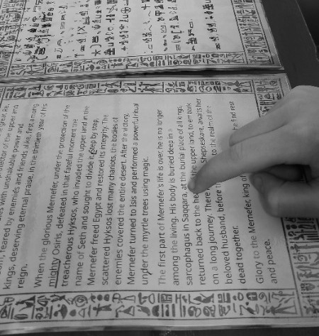

Sedelská pravda
Fakta, názory a konspirační teorie bez repelentu
Fakta, názory a konspirační teorie bez repelentu

Redakce: Paní Burštíková, můžete našim čtenářům přiblížit, jak začala vaše poslední výprava?
Kateřina Burštíková: Začalo to jako běžná expedice. Měli jsme mapu, několik podezřele přesných záznamů z 19. století a čtyři velbloudy, z nichž jeden měl klaustrofobii. Cíl bylo naleziště v oblasti Such-Hetep, kde měl být ukryt fragment desky z Per-Ba’an, legendárního chrámu z doby před tisíci lety.
Redakce: A našli jste ji?
KB: Našli. Byl to plochý kámen zasazený do podlahy chrámu – starý, popraskaný, s nápisy ve třech jazycích. Když jsme ho očistili, v chrámu na okamžik zhasly všechny naše světla. Ne vítr. Ne závada. Prostě tma. A pak – zpod podlahy se ozval dětský smích. Takový ten jemný, táhlý. Znělo to, jako kdyby se někdo smál přes staletí.
Redakce: Smích?
KB: Jo. A pak už jen ticho. Po chvíli se světla rozsvítila sama od sebe. Náš tým se shodl, že to byla jen akustika. Já ne. Mám pocit, že jsme desku neobjevili, ale že ona si nás vybrala.
Redakce: To je opravdu zvláštní příběh. Došlo na vaší výpravě k nějakým dalším podivnostem?
KB: No jo. Hned druhý den jsme narazili na skupinu malomocných poutníků, kteří putovali přes poušť k posvátnému místu zvanému Kamen Jarmoket. Legenda říká, že kdo sem dojde s čistým srdcem a vysloví svoje jméno, tak se uzdraví.
Neměli to lehké, to víte, malomocenství je připravilo o různé části těla. Měli jen pár hadrů a dřevěné hole, ale byli šťastní, že se dostali tak daleko.
Redakce: Pomohli jste jim?
KB: Samozřejmě. Nabídli jsme jim vodu a jídlo. Nejvíc je však zaujala deska. Když ji viděli, začali se smát, a pak zpívat a tančit. Bylo to šílené – jako kdyby se vrátili do doby, kdy ještě nebyli nemocní. A pak nám řekli, že kámen je posvátný a že nás požehnal.
Název: Sedelská pravda
Vydavatel: Sedlo Media Group, s.r.o.
Adresa: Sedlo 47, Česká republika
Email: info@sedelska-pravda.cz
Telefon: +420 123 456 789
Šéfredaktorka: Karolína Bukovská
Výkonný redaktor: Michal Bukovský
Redakce: Lucie a Bohumil Borešovi
Grafická úprava: Michal Bukovský
Tisk: Česká Tiskárna a.s., Nová Bystřice
Datum vydání:
Číslo vydání:
© 2025 Sedlo Media Group. Všechna práva vyhrazena.
Jakékoli šíření obsahu bez svolení vydavatele je zakázáno.